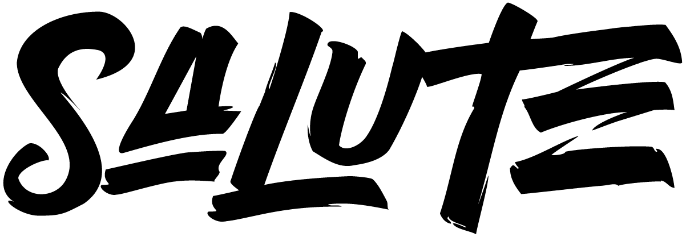

SOUTH ASIAN LEADERS UNITE TO EMPOWER
The community.
The connections.
The possibility.
SALUTE is a private, professional network dedicated to creating impactful connections between South Asian women.
Our members are executives, trailblazers, and pioneers across industries. We bring them together to exchange ideas, share expertise, and build relationships that support both professional advancement and personal growth.
Our mission is to expand access, visibility, and connection for South Asian women and allies. Allies are active champions—people who use their influence to make introductions, open doors, and create opportunity.
Explore the SALUTE community ↗BEYOND THE EVENING
A year-round community.
S.Suite extends a community that connects throughout the year—not just for one evening.
On the Table
Curated dinners where South Asian leaders and strategic allies build meaningful relationships through conversation, introductions, and action.
Visionary conversations & Masterclasses
Access to influential leaders and practical expertise across leadership, capital, governance, and career growth.
The Forum
Curated table conversations and short Power Panels that connect the community with leaders, experts, and allies.
SALUTE FoundationA registered 501(c)(3) nonprofit organization supporting this work. S.Suite brings recognition and fundraising together to help advance SALUTE’s mission.
01 / COMMUNITYA place to belong.
A trusted network for exchanging ideas, offering support, and sharing experience.
02 / CONNECTIVITYRelationships that matter.
Connections across roles and industries that can lead to mentorship, introductions, and opportunity.
03 / CULTIVATIONRoom to grow.
Learning, resources, and access to expertise that help leaders develop and advance.
 THE S.SUITE CHAIR · LIFETIME ACHIEVEMENT
THE S.SUITE CHAIR · LIFETIME ACHIEVEMENT